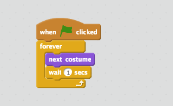

Explore!
You can add sound and animation to your new sprite.
Adicione Som
Clique na guia Sons. Você pode:
 Escolher um som
Escolher um som
 Gravar um som
Gravar um som
 Importar um arquivo de som
Importar um arquivo de som
Em seguida, clique em Scripts, e arraste um bloco executar som. Escolha o som que quiser no menu e clique para executar.
Animação
Clique na guia Fantasias para ver as fantasias de um ator. Você pode fazer uma animação trocando de fantasias.
Clique em Scripts e faça um script que troca de fantasias:
 Compartilhe seu projeto.